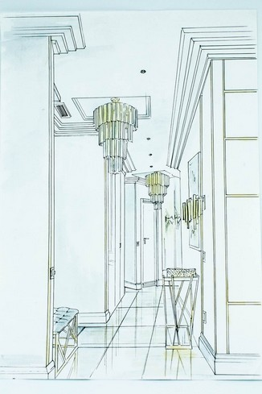
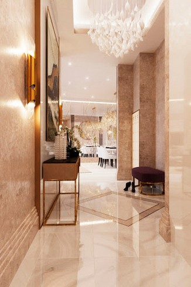
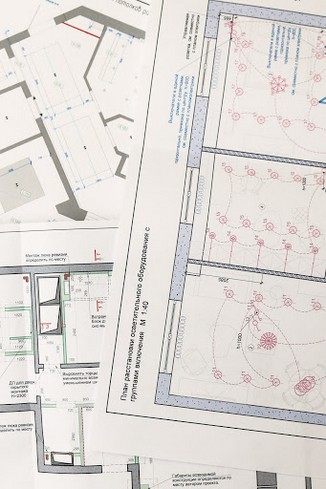
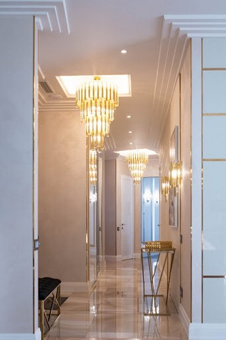

Почему выбирают нас?
Наши преимущества
✔
Сочетание благородной
роскоши и
Функциональности
комфорта... Мы создаем уникальные по уровню комфорта интерьеры с использованием новейших технологий и всемирно известных брендов. Применение натуральных материалов и предметов, допустимых к переработке, позволяет нам распространять идею "экологичной роскоши".
✔
Все «под ключ»
От проектирования до
реализации
время для более... Мы экономим Ваше время для более важных дел. Доверяя нам работу над домом Вашей мечты,вы снимаете с себя огромное количество вопросов, связанных с выбором материалов, заказами, отгрузками, взаимодействию со строителями, финансовой отчетностью и сроками ремонта. Работаем только с проверенными строителями и надежными поставщиками.
✔
Лучшие условия для
заключения договора
Поэтапная... Полная прозрачность. Поэтапная оплата проекта позволит оптимально планировать финансовые потоки. Договор четко регулирует сроки выполнения, ответственность и объем работы дизайнеров и проектировщиков. Наличие прямых контрактов с европейскими производителями обеспечивает наших Клиентов гарантированным качеством изделий и сроками поставки товара.
✔
Профессиональный
Опыт
Признание
мечты с... Осуществляем Ваши мечты с 2013 года. За это время собрали уникальную команду специалистов, способных создать эксклюзивный интерьер в любой стилистике, начиная от классических барокко, роккоко, прованс, и заканчивая современным минимализмом, хай тек, эклектикой. Наш профессионализм высоко оценило жюри международного конкурса дизайнеров и архитекторов ADD Awards. Мы стали победителями 2019 года.
Наши услуги
Создаём дизайн интерьера
вашей мечты
Разработка дизайн-проекта
Разработка дизайн-проекта
Разработка проекта осуществляется в 3 этапа.
Первый этап: Заключение договора, обмер помещения, обсуждение технического задания на проектирование. Мы разрабатываем варианты планировок и концепцию будущего интерьера (в виде коллажей).
Второй этап: После согласования планировочного решения и ТЗ выполняем визуализацию интерьера (фотореалистичные картины Вашего дома после ремонта).Обсуждаем, корректируем, согласовываем.
Третий этап: Разрабатываем техническую документацию (чертежи) для строителей. Это пошаговая и детальная инструкция для реализации дизайн-проекта.
Ведение авторского сопровождения
Ведение авторского сопровождения
В процессе ремонта и строительства мы обеспечиваем контроль за правильностью выполнения проекта.Выезжаем по салонам поставщиков для согласования материалов отделки. Вносим и согласовываем корректировки в проект. Обеспечиваем информационную поддержку для строителей.
Комплектация объекта стройки
Комплектация объекта стройки
В рамках согласованного бюджета подбираем и утверждаем у Заказчика отделочные материалы и мебель.Контролируем оформление заказов, выставление счетов, отгрузок, финансовую документацию.
Услуга “все под ключ”
Услуга “все под ключ”
Включает в себя разработку дизайн-проекта, ведение авторского сопровождения и комплектацию проекта. Очень удобная услуга при высокой занятости клиента или проживании в другом городе или стране. Мы проводим удаленное согласование всех этапов дизайн-проекта, регулярно отправляем фотоотчеты с объекта стройки и процесса закупки материалов. Клиент всегда в курсе событий и может спокойно заниматься более важными делами.
Галерея
Наших работ
Жилые помещения
Коммерческие помещения
Все работы
Понравились наши работы
Давайте обсудим
ваш проект!
design
Как мы работаем
Последовательность работ
над дизайн-проектом
Концепция
3D-визуализация

Документация
Реализация
За чашечкой ароматного чая у нас в студии мы обсуждаем интерьер Вашего будущего дома. Для детальной проработки Ваших пожеланий мы задаем вопросы, более точно отражающие внутренние потребности и ограничения. Наша задача - предусмотреть все варианты действий в интерьере, создав максимально комфортную планировку помещений. Мы обсудим Ваши любимые цвета, предпочтения по стилю, материалы и оборудование. В итоге подготовим несколько вариантов планировок, одна из которых и будет согласована. В подготовленных коллажах мы продемонстрируем и обсудим концепцию будущего интерьера.
ОБСУДИТЬ ПРОЕКТ По согласованному Техническому Заданию мы создадим фотореалистичные картины интерьера, где отразятся наши идеи по стилистике, цвету и декоративным элементам Вашего будущего дома.
ОБСУДИТЬ ПРОЕКТ После согласования 3-D Визуализации всех помещений мы разработаем комплект технической документации (чертежи). Они являются детальной пошаговой инструкцией для выполнения всех работ по реализации дизайн-проекта. На основании этих документов строители могут рассчитать точную смету на ремонтные работы, поставщики отделочных материалов - назвать стоимость всех отделочных материалов, мебели и оборудования.
ОБСУДИТЬ ПРОЕКТ По строго спланированному графику опытные мастера, под нашим чутким руководством, выполнят весь объем работ по дизайн-проекту и смете. Мы регулярно предоставляем фотографии о текущей ситуации на стройке, отчеты о закупаемых материалах и сроках реализации проекта.
ОБСУДИТЬ ПРОЕКТ
Стоимость услуг
В Санкт-Петербурге
Дизайн-проект
3 000 руб / м²
Авторское сопровождение
20 000 руб / мес
Комплектация проекта
500 руб / м²
ПОД КЛЮЧ (Дизайн-проект, авторское сопровождение, комплектация)
4 500 руб / м²
Отзывы
Наших благодарных
клиентов
О нас
Студия дизайна элитных
интерьеров в Москве
и Санкт-Петербурге
Студия основана в 2012 году. За это время
разработано более 50 проектов квартир,
загородных домов, общественных
и коммерческих интерьеров.
Мы создаём глубоко индивидуальные интерьеры
от традиционной классики
до современного минимализма. При
проектировании используем последние тенденции
мира дизайна и строительных технологий.
Основная категория наших клиентов приходит по
рекомендации друзей
и знакомых.
Наша команда
Руководитель студии
Денис Фёдоров
Путь в дизайн был крайне тернист. После окончания института пробовал себя в разных сферах, начиная от телохранителя, менеджера по продажам и заканчивая преподавателем психологии в университете. Но когда предложили возглавить новое направление в компании, где необходимо было придумать несколько коллекций, а затем организовать процесс производства и реализации мебели для ванной комнаты, появилось понимание своего собственного пути. На себе испытав все строительные профессии, начиная от укладки плитки, малярных работ, электрики, сантехники и заканчивая руководством процесса, Денис вышел специалистом, который может не только объяснить, как задумал дизайнер, но и показать, как это сделать.
Арт-директор студии
Татьяна Лазурная
Татьяна с самого детства знала, чем она хочет заниматься в жизни. Окончив художественную школу, колледж дизайна, а затем институт по кафедре дизайна среды, она 15 лет готовилась реализовать свою мечту – стать дизайнером интерьера. С 2004 года профессионально занимается дизайном интерьера, реализовав несколько десятков проектов жилой и коммерческой недвижимости. Широкие познания в истории искусств, художественное образование, талант и тонкое понимание потребностей клиентов делает ее успешным и востребованным профессионалом.
Наши награды
и публикации
Давайте обсудим ваш проект
Заполните поля
и мы вам перезвоним
Почта для связи с нами:
home.lazurnaya@gmail.comНомер телефона для связи с нами:
+7 (964) 342-18-33@lazurnaya_design